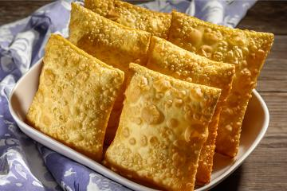

Pastel frito

Pastel is a typical brazilian street food that consists
on crispy fried dough with a varied assortment of fillings.
it can be found on bars and bakeries sporadically but are normally
sold on dedicated shops and street stalls.
Ingredients (15 portions):
-
3 cups of wheat flour
-
3 tablespoons of cooking oil
-
1 soup spoon of salt
-
1 cup of water
-
1 tablespoon of cane liquor
-
Wheat flour to work with the dough
-
Fillings to taste
(Tip: you can start with seasoned minced meat!!!)